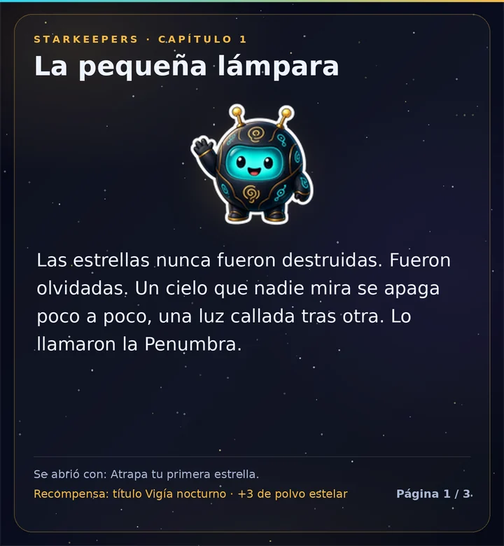

La historia del cielo
La historia
Las estrellas nunca fueron destruidas, solo olvidadas, y un cielo que nadie mira se apaga poco a poco. Lumo, un pequeño robot-lámpara, mantuvo un farol encendido y cuenta la historia en 8 capítulos y un interludio.
- Los capítulos se abren mientras tú y tu servidor juegan: tu primera captura, la primera constelación encendida, nuevas regiones, un eclipse y más.
- Cada capítulo da un título; algunos dan un fondo nuevo.
- Léelos con
/sky story.
